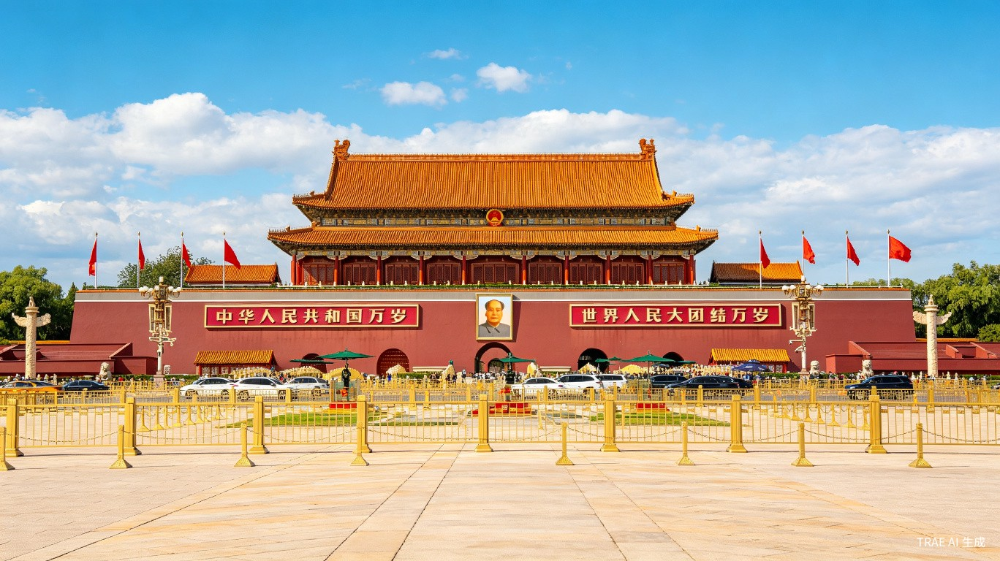
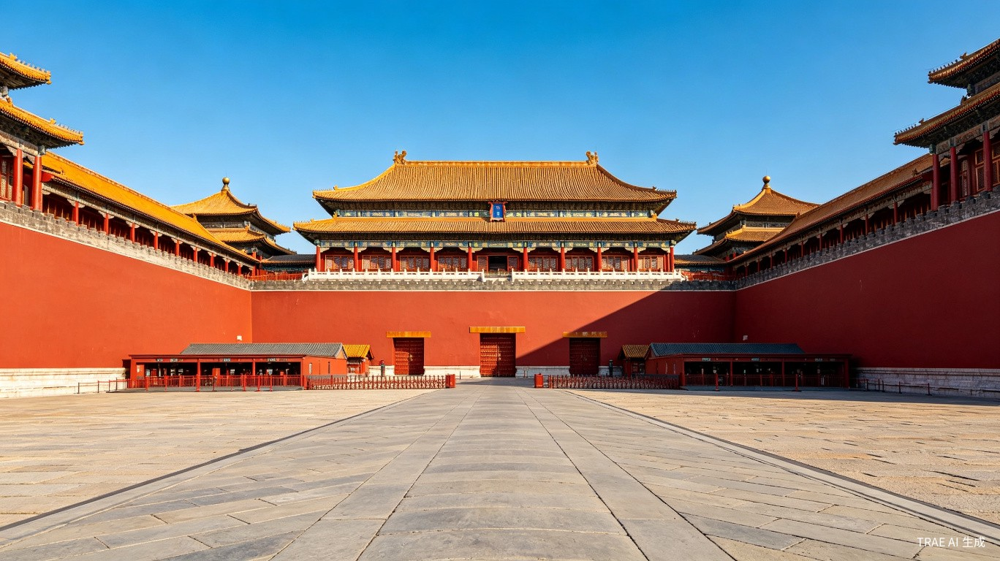
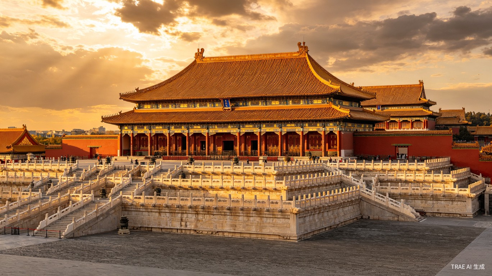
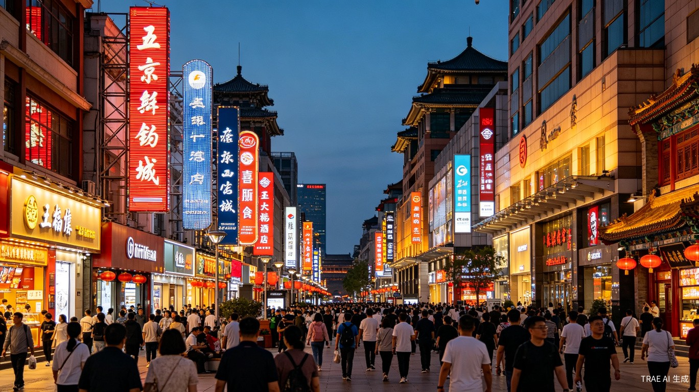
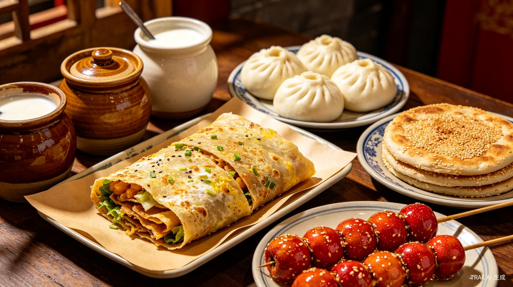
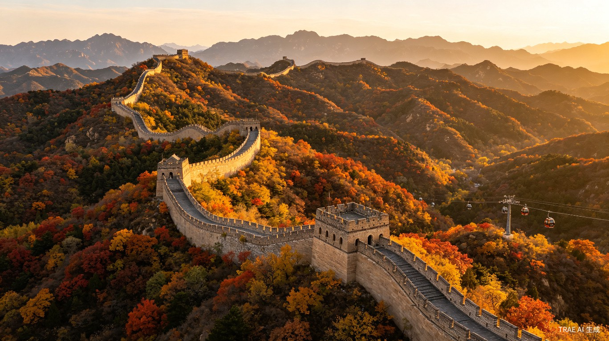
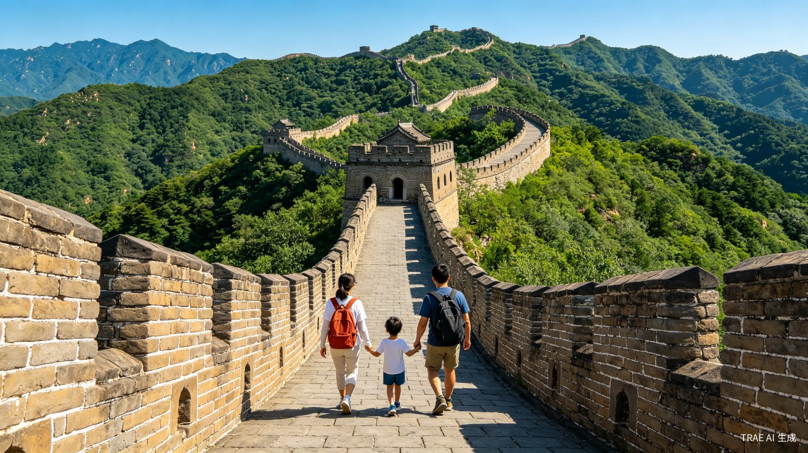
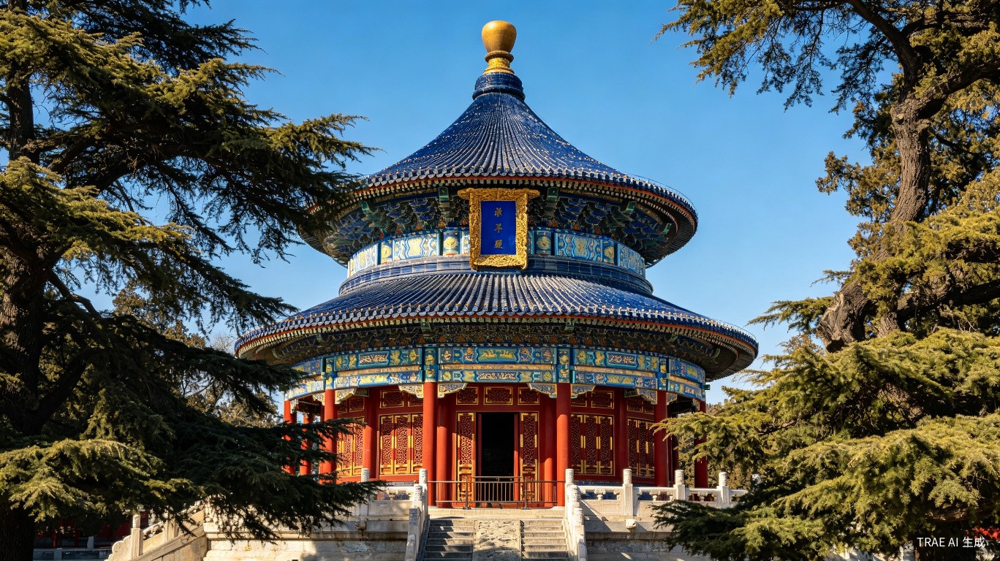
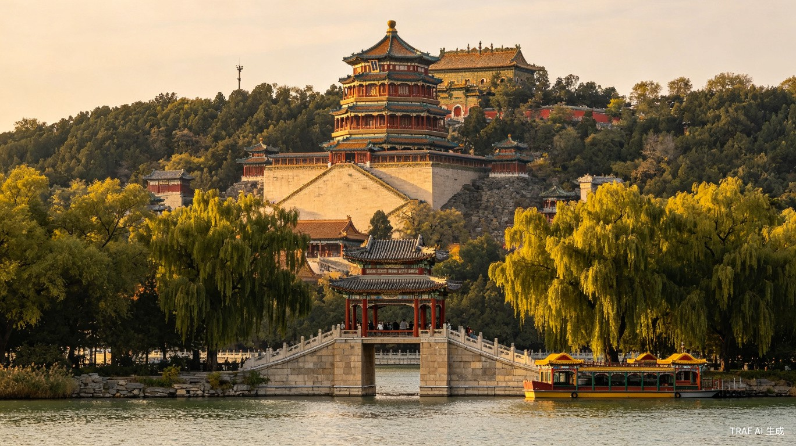

China's majestic capital where imperial grandeur meets vibrant modern life. Explore centuries of history through palaces, temples, and one of the world's greatest wonders.
Your China adventure begins in the heart of the nation.

One of the world's largest public squares, spanning 440,000 square meters. Surrounded by monumental buildings including the Great Hall of the People and the National Museum, it has been the stage for pivotal moments in Chinese history.
Walk across the vast plaza and take in the monumental scale of China's capital. Visit the Chairman Mao Memorial Hall and the National Museum. Best visited in the afternoon when the lighting is ideal for photos. Allow 1-2 hours for a relaxed visit with the family.

The world's largest imperial palace complex, home to 24 emperors across the Ming and Qing dynasties. This UNESCO World Heritage Site contains over 980 buildings with golden-tiled rooftops and iconic red walls.
Admire the imposing Meridian Gate and the sweeping moat from the outside. Walk along the palace perimeter for stunning photo opportunities of the golden rooftops and red walls. A great warm-up before the full interior tour the next day. Allow 45 minutes to 1 hour.
Beijing's most celebrated culinary tradition, prepared since the imperial era. The duck is roasted to perfection with crispy skin and tender meat, served with thin pancakes, spring onions, and sweet bean sauce.
Watch the chef carve the whole duck tableside — a memorable experience for the whole family. Wrap slices of duck, scallion, and cucumber in a thin pancake with hoisin sauce. Many top restaurants also offer additional dishes like duck soup. Book in advance and allow 1.5 hours for a leisurely dinner.
Step inside the Forbidden City and experience Beijing's vibrant shopping district.

The heart of imperial China, with nearly 9,000 rooms spread across 720,000 square meters. Walk the central axis from the Hall of Supreme Harmony through the Palace of Heavenly Purity to the Imperial Garden with its ancient cypress trees.
Enter through the Meridian Gate and follow the central axis. Don't miss the Hall of Supreme Harmony, the throne room where emperors held court. Explore the side galleries for fascinating exhibitions of imperial treasures, clocks, and ceramics. The Imperial Garden at the northern end is a peaceful spot for family photos. Allow 3-4 hours and wear comfortable shoes.

Beijing's most famous shopping street, blending modern malls with traditional stores. The pedestrian boulevard is lined with international brands, historic Chinese medicine shops, and the iconic Wangfujing Bookstore.
Stroll down the car-free pedestrian boulevard and browse flagship stores. Visit the historic Wangfujing Bookstore for unique souvenirs. The nearby snack street is perfect for adventurous family tasting — try candied hawthorn, lamb skewers, and more. Allow 2-3 hours for shopping and snacking.

Wangfujing's food alley comes alive at night with sizzling grills and aromatic steam, offering classic Beijing street foods that have been enjoyed by locals for generations.
Sample crispy jianbing crepes made fresh on the spot, savory baozi dumplings, sweet tanghulu candied fruits, and refreshing yogurt in traditional ceramic jars. Go with an open mind and share dishes family-style. The atmosphere is lively and safe for all ages. Allow 1-2 hours for a relaxed food crawl.
Walk one of humanity's greatest architectural achievements.

A well-preserved Ming Dynasty section featuring 23 watchtowers across 2,250 meters, surrounded by lush forests. Less crowded than Badaling, it offers a more serene and authentic Great Wall experience.
Take the cable car up the mountain for panoramic views of the wall snaking across dramatic ridgelines. Walk between watchtowers at your own pace and enjoy the scenery. The toboggan slide down is a family favorite — kids and adults alike love the thrilling descent. Allow 4-5 hours including travel time from the city.

The Great Wall stretches over 21,000 kilometers across China, built over 2,000 years ago. The Mutianyu section's steep gradients offer both challenge and reward, with each watchtower revealing new mountain vistas.
Hike between watchtowers at a leisurely family pace. The wall's steps are uneven in places — take your time and rest at each tower. Bring water and snacks, and wear sturdy shoes with good grip. The higher towers offer the best photo opportunities with mountains rolling into the distance. This is the highlight of the trip for many families.
Discover the spiritual and scenic treasures of imperial Beijing.

Built in the 15th century, this Ming architecture masterpiece was where emperors prayed for bountiful harvests. The circular Hall of Prayer for Good Harvests, with its triple-gabled blue-tiled roof, is an icon of Beijing.
Visit the Hall of Prayer for Good Harvests and the Circular Mound Altar. The surrounding park is a living showcase of local culture — watch residents practice tai chi, play traditional instruments, and fly kites. Arrive early in the morning to see the park at its most active. Allow 2-3 hours for the temple and park.

A UNESCO-listed imperial garden spanning 2.9 square kilometers, centered around Kunming Lake and Longevity Hill. Features the world's longest covered corridor adorned with over 14,000 paintings.
Stroll the Long Corridor and admire the thousands of hand-painted scenes on its ceiling. Take a dragon boat across Kunming Lake for a unique perspective of the palace. Climb to the Buddhist Fragrance Pavilion for panoramic views. The lakeside paths are flat and stroller-friendly. Allow 3-4 hours for a thorough visit.
On Day 5 morning, after a relaxed breakfast and hotel checkout, your family will take a domestic flight from Beijing to Shanghai (approx. 2.5 hours), transferring from imperial history to modern marvels.
Next stop: Shanghai, where colonial charm meets futuristic skyline.
Explore Shanghai →